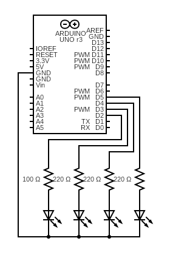
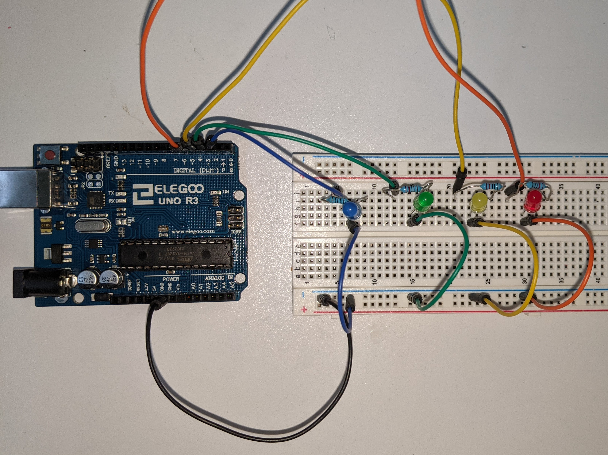

A1: Blink!
Kierra Long
Schematic
This is my schematic of the circuit. It is made of 4 LEDs (from left to right: Blue, Green, Yellow, Red)
and a corresponding resistor before each one. The Pins from the arduino are 5V when on high, so I used Ohms law to calculate
the resistor current for each LED. The calculations are as follow:
For Blue LED:
(5V-3.3V)=(0.02A)(X)
(1.7V)=(0.02A)(X)
X=85 Ohms
Round up to 100 Ohm resistor.
For Green, Yellow, Red LEDs:
(5V-1.8V)=(0.02A)(X)
(3.2V)=(0.02A)(X)
X=160 Ohms
Round up to 220 Ohm resistor.
After passing through the LEDs, all wires connect back to Ground.
Created with https://www.circuit-diagram.org/
Circuit
This is the circuit based off of the previous schematic, made using a breadboard and Arduino.
Code
// constants won't change. They're used here to set pin numbers:
const int blue = 2; // set pin for the blue LED
const int green = 3; // set pin for the green LED
const int yellow = 4; // set pin for the yellow LED
const int red = 5; // set pin for the red LED
// the setup function runs once when you press reset or power the board
void setup() {
// initialize digital pin LED_BUILTIN as an output.
for (int x=2; x<6; x++) {
pinMode(x, OUTPUT);
}
}
// the loop function runs over and over again forever
void loop() {
int y[] = {blue, green, yellow, red}; // array of the pins
// Drummroll
// countdown
for (int x=0; x<3; x++) {
digitalWrite(red, HIGH); // turn the red LED on
delay(300); // dramatic pause
digitalWrite(red, LOW); // turn the red LED off
delay(300); // dramatic pause
}
digitalWrite(blue, HIGH); // turn the blue LED on
delay(100); // dramatic pause
digitalWrite(blue, LOW); // turn the blue LED off
delay(200); // dramatic pause
digitalWrite(yellow, HIGH); // turn the yellow LED on
delay(100); // dramatic pause
digitalWrite(yellow, LOW); // turn the yellow LED off
digitalWrite(green, HIGH); // turn the green LED on
delay(100); // dramatic pause
digitalWrite(green, LOW); // turn the green LED off
delay(200); // dramatic pause
digitalWrite(red, HIGH); // turn the red LED on
delay(100); // dramatic pause
digitalWrite(red, LOW); // turn the red LED off
digitalWrite(yellow, HIGH); // turn the yellow LED on
delay(100); // dramatic pause
digitalWrite(yellow, LOW); // turn the yellow LED off
// Flash all lights
for (int x=0; x<4; x++) {
int pin = y[x];
digitalWrite(pin, HIGH); // turn the LED on (HIGH is the voltage level)
}
delay(200); // dramatic pause
for (int x=0; x<4; x++) {
int pin = y[x];
digitalWrite(pin, LOW); // turn the LED off (LOW is the voltage level)
}
delay(300); // dramatic pause
// Tune
int len = 900;
digitalWrite(yellow, HIGH); // turn the yellow LED on
delay(797); // dramatic pause
digitalWrite(yellow, LOW); // turn the yellow LED off
digitalWrite(green, HIGH); // turn the green LED on
delay(797); // dramatic pause
digitalWrite(green, LOW); // turn the green LED off
digitalWrite(red, HIGH); // turn the red LED on
delay(531); // dramatic pause
digitalWrite(red, LOW); // turn the red LED off
digitalWrite(green, HIGH); // turn the green LED on
delay(797); // dramatic pause
digitalWrite(green, LOW); // turn the green LED off
digitalWrite(blue, HIGH); // turn the blue LED on
delay(797); // dramatic pause
digitalWrite(blue, LOW); // turn the blue LED off
digitalWrite(blue, HIGH); // turn the blue LED on
delay(100); // dramatic pause
digitalWrite(blue, LOW); // turn the blue LED off
digitalWrite(green, HIGH); // turn the green LED on
delay(100); // dramatic pause
digitalWrite(green, LOW); // turn the green LED off
digitalWrite(yellow, HIGH); // turn the yellow LED on
delay(100); // dramatic pause
digitalWrite(yellow, LOW); // turn the yellow LED off
digitalWrite(red, HIGH); // turn the red LED on
delay(797); // dramatic pause
digitalWrite(red, LOW); // turn the red LED off
delay(100); // dramatic pause
digitalWrite(yellow, HIGH); // turn the yellow LED on
delay(len); // dramatic pause
digitalWrite(yellow, LOW); // turn the yellow LED off
Operation

This is a Gif of the operation of the blinking lights. The whole process takes about 8 seconds to repeat.
*BONUS* Music Video
I hope you enjoyed this surprise music video. To make the lights match up, it was alot of trial and error and running the code
over and over again. I also looked up sheet music to calculate the length of the notes in ms by converting the BPM of the song to the length of
quarter notes. This took a bit to get timed right, but after I thought I had got the first few seconds worked out, and finally was able to start the song and the operation of the lights at the same time,
I was shocked to see that it repeated exactly in time with the rest of the intro as well! This would have been even betterr if I matched up the lights
with the rest of the song, but obviously this was a very time-intensive process, so I stopped after the intro. Hope this was a surprise!
Song Credits:
Never Gonna Give You Up
Rick Astley